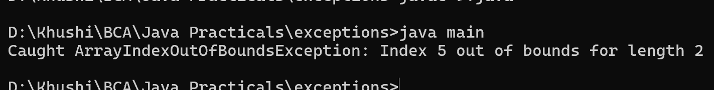

9. Write a Java program to show an example of multiple catch
class main {
public static void main(String[] args) {
try {
int[] numbers = new int[2];
numbers[5] = 10;
String str = null;
System.out.println(str.length());
int result = 10 / 0;
}
catch (ArrayIndexOutOfBoundsException e) {
System.out.println("Caught ArrayIndexOutOfBoundsException: " + e.getMessage());
}
catch (NullPointerException e) {
System.out.println("Caught NullPointerException: " + e.getMessage());
}
catch (ArithmeticException e) {
System.out.println("Caught ArithmeticException: " + e.getMessage());
}
catch (Exception e) {
System.out.println("Caught a general exception: " + e.getMessage());
}
}
}
